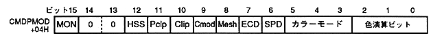

Return to previous page ｜ Return to menu ｜ Go to next page
-
■ 6.3 CMDPMOD (drawing mode word)
- CMDPMOD is a word that controls clipping enable / disable, mesh processing, transparency code specification, color mode specification, color calculation, and shade processing. It is in 2 bytes (16 bits) from the start address + 04H of the command table. The bit configuration is as follows. Set 0 to unused bits.

- MSB on bit: MSB on (MON), bit 15
- VDP2 has a function to perform shadow and window processing by looking at the MSB of sprite data. Specify this bit to use the function. For details, refer to the VDP2 manual.
- High speed shrink: high speed shrink (HSS), bit 12
- Select whether to give priority to speed or accuracy when drawing a rectangular sprite or deformed sprite.
- Pre-clipping disabled: Preclipping disable (Pclp), bit 11
- Specify whether or not to disable the coordinate calculation process that determines whether clipping is necessary.
- User clipping enable bit: user clipping enable bit (Clip), bit 10
- Specifies whether or not to draw the part according to the user clipping coordinates that have already been set for the part drawing command.
- Clipping mode bit: Clipping mode bit (Cmod), bit 9
- When user clipping is enabled (Clip = 1), select whether to draw the inside or outside of the user clipping coordinates.
- Mesh enable bit: mesh enable bit (Mesh), bit 8
- Specify whether to perform mesh processing when drawing a part.
- End code disable bit: end-code disable (ECD), bit 7
- Specify whether to disable the end code of the character pattern.
- Transparent pixel disable bit: See-through pixel disable (SPD), bit 6
- Specify whether to disable the transparent pixel of the character pattern.
- Color mode bit: color mode bit, bits 5 to 3
- Specify the number of colors for drawing the sprite and the expression method.
- Color calculation bit: color calculation bit, bits 2 to 0
- Specify Gouraud shading, shadow, semi-brightness, and translucent color operations.
Return to previous page ｜ Return to menu ｜ Go to next page